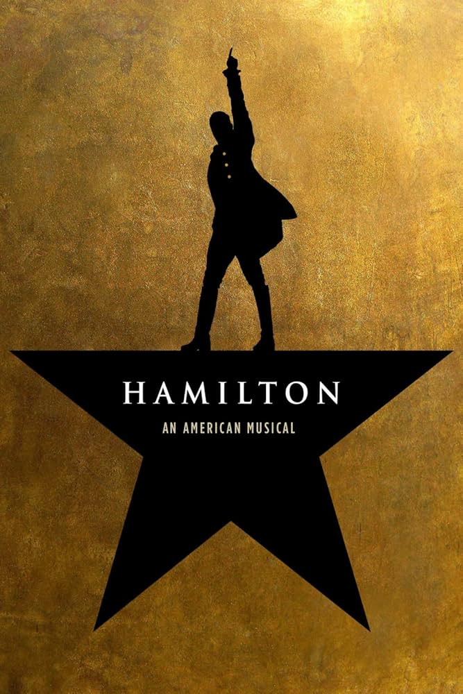
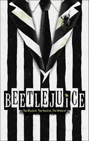

🎶 Mamma Mia!
Sophie está prestes a se casar e tenta descobrir quem é seu pai. Tudo isso ao som dos maiores sucessos do ABBA.

🖤 Heathers
Veronica tenta sobreviver ao caos social de sua escola enquanto lida com amizades perigosas.

🧙 Wicked
A história das bruxas de Oz antes da chegada de Dorothy.

⚔️ Hamilton
Musical que conta a vida de Alexander Hamilton utilizando rap e hip-hop.

🎷 Chicago
Um clássico da Broadway cheio de jazz, fama, escândalos e tribunais.

👻 Beetlejuice
Lydia encontra um fantasma extremamente estranho e divertido.